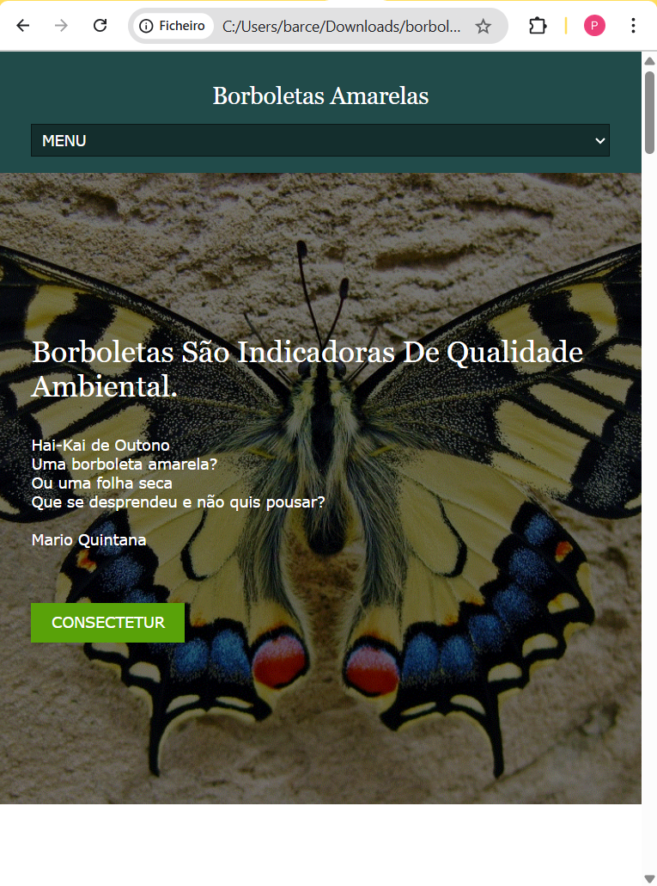

Borboletas Amarelas

Página Inicial
Página de Conteúdo
Galeria Borboletários
Sobre o Projeto
Este site foi desenvolvido como projeto individual de conclusão de módulo do curso Técnico em Desenvolvimento de Sistemas na Escola Técnica de São Paulo (ETEC). A proposta tem como objetivo sensibilizar o público para questões ambientais por meio do tema ‘Borboletas’.
Objetivo
Transmitir informações sobre as borboletas, ressaltando a importância da preservação ambiental e da relação Homem X Natureza.
Conteúdo
Os conteúdos foram organizados em quatro grupos principais:
- O Homem e As Borboletas: mitologia, arte, literatura e trabalho com borboletas.
- Conhecendo As Borboletas: características biológicas e habitat das lepidópteras.
- Borboletários: história, funcionamento e locais na cidade de São Paulo.
- Acompanhando As Borboletas: reportagens e notícias relacionadas ao tema.
Desenvolvimento
O projeto priorizou um design visual atrativo e navegação simples e intuitiva, facilitando a consulta aos temas diretamente pela Home ou pelos menus internos.
Participação
- Front-end: Criação das páginas com HTML5, CSS3 e JavaScript.
- Organização do conteúdo: Estruturação e categorização das seções e navegação do site.
- Design e usabilidade: Definição do layout, cores e ajustes de responsividade.
← Voltar para o Portfólio